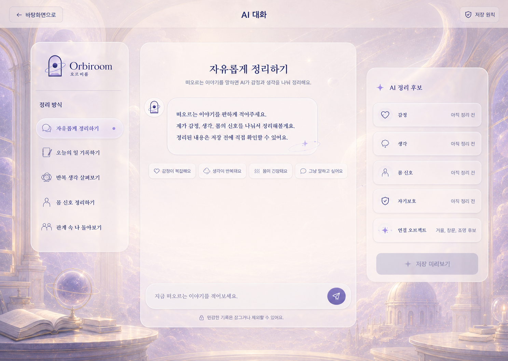
AI 대화
겪은 일을 말하면 사건·감정·생각·몸의 신호로 나눠 정리합니다.
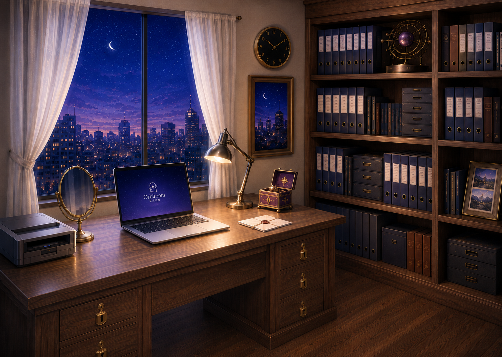
정리 방식
한 문장 안의 사건과 감정, 해석과 행동을 각각의 자리로 옮겨놓습니다. 결론을 내리는 서비스가 아닙니다.
나친구가 내 말을 제대로 듣지 않는 것 같아서 서운했어요. 그런데 괜히 예민해 보일까 봐 아무 말도 안 했어요.
기능
핵심만 담았습니다. 대화하고, 기록하고, 다시 바라봅니다.

겪은 일을 말하면 사건·감정·생각·몸의 신호로 나눠 정리합니다.
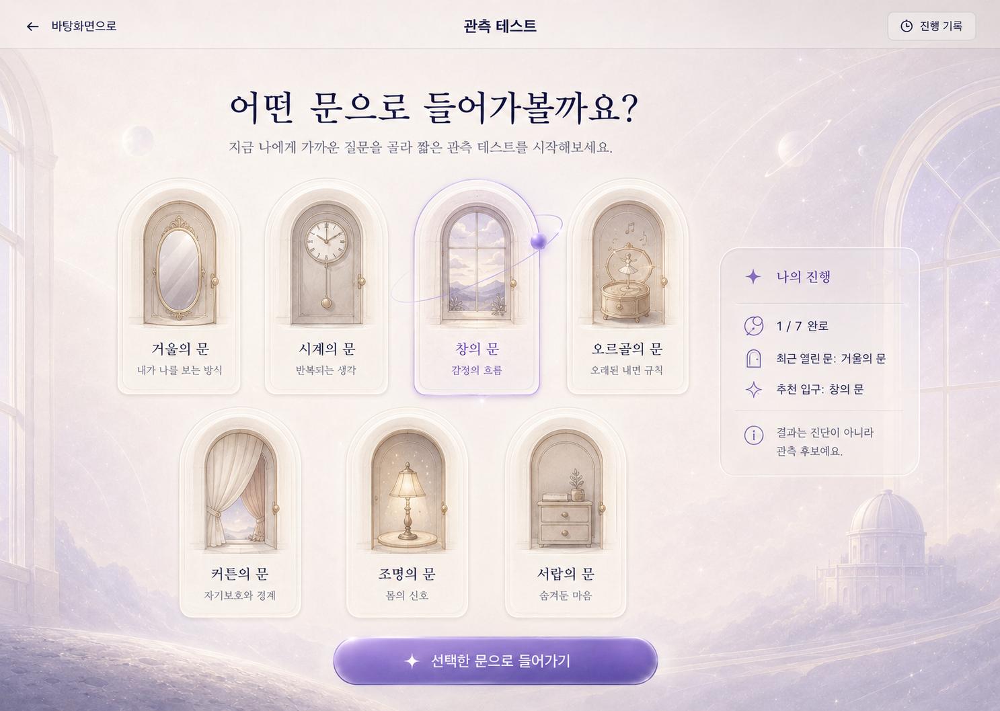
일곱 개의 문으로 들어가는 짧은 관측. 결과는 진단이 아니라 후보입니다.
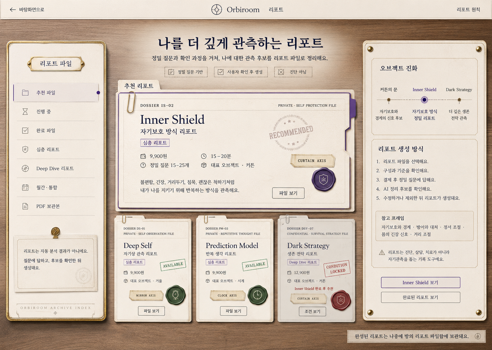
기록이 쌓이면 반복되는 흐름을 관측 지도로 펼칩니다.
일곱 개의 문
문 안의 장면만 다릅니다. 입구의 형태는 같습니다.
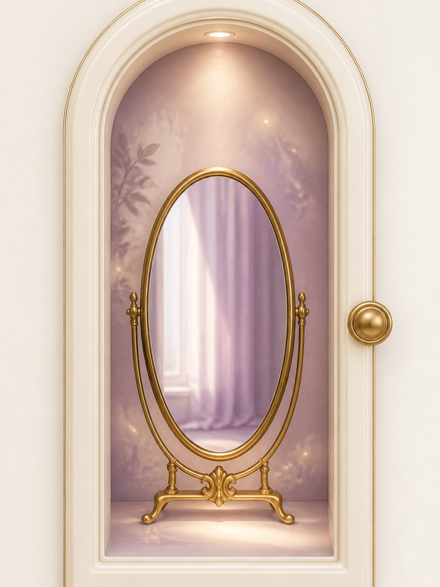
거울의 문내가 나를 보는 방식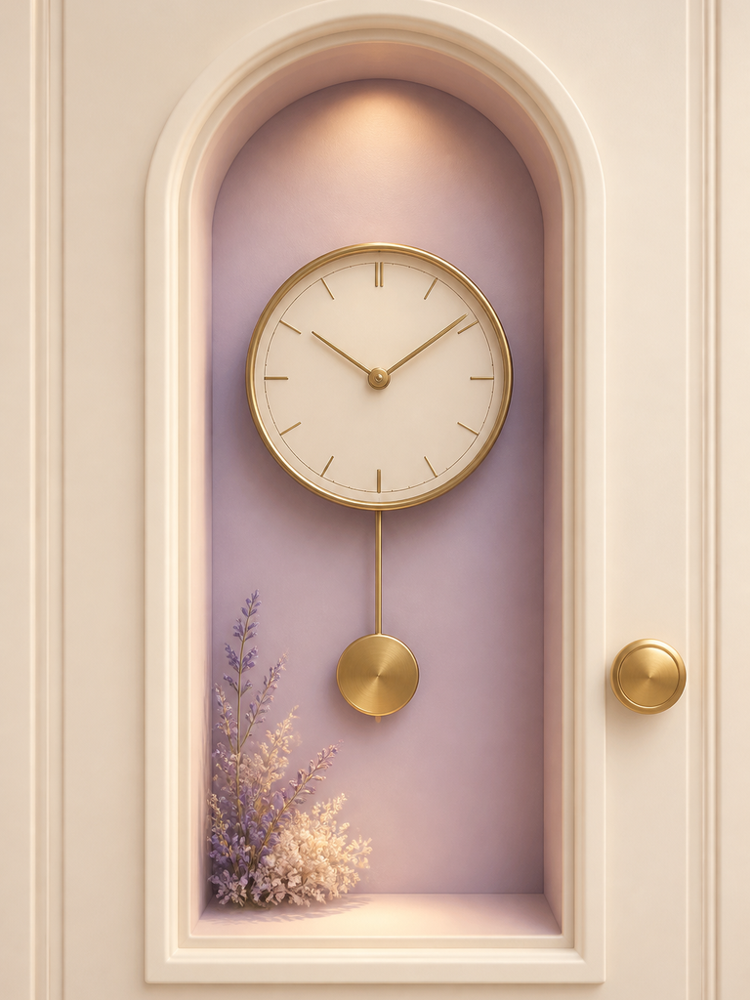
시계의 문반복되는 생각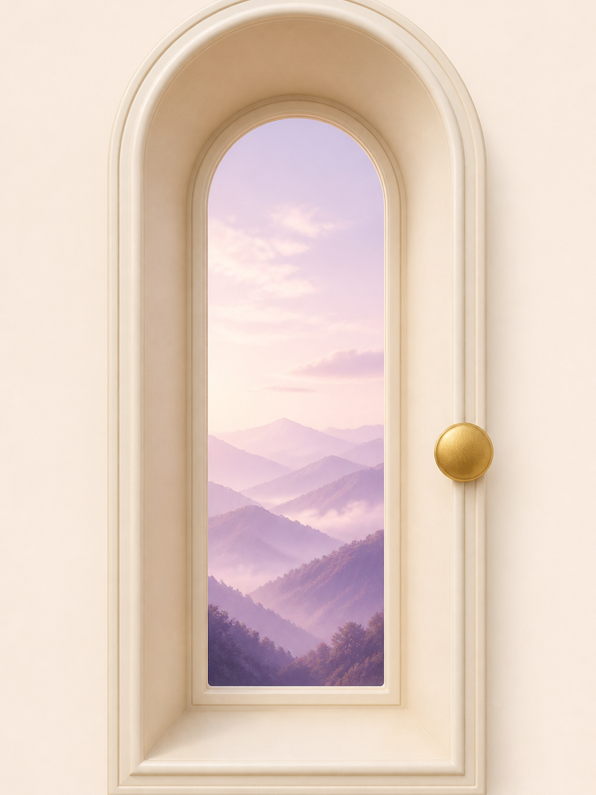
창의 문감정의 흐름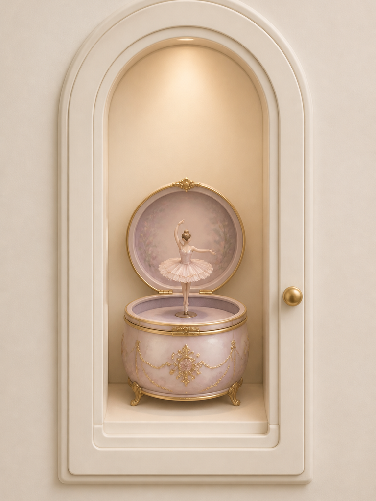
오르골의 문오래된 내 안의 규칙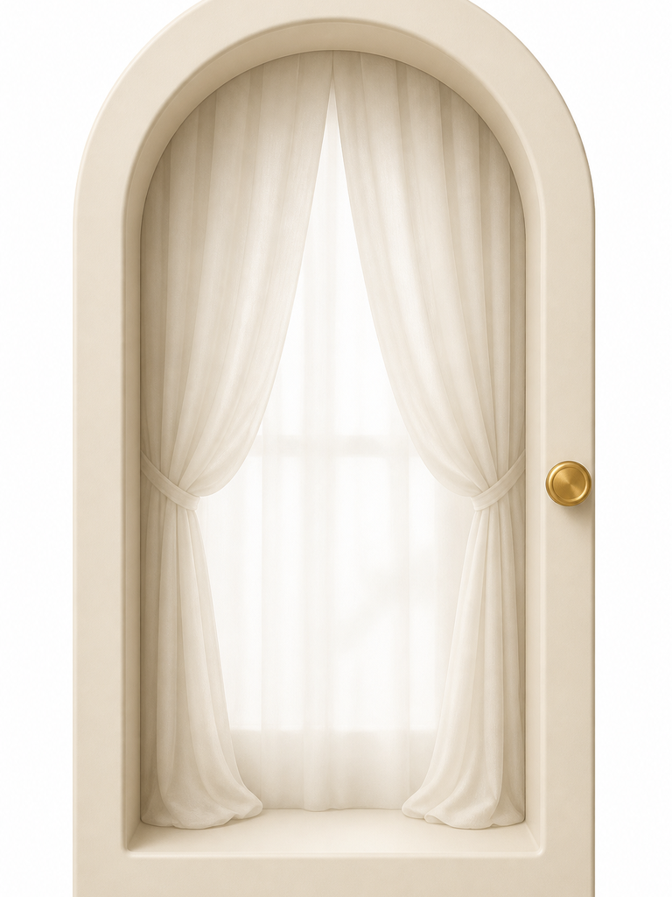
커튼의 문자기보호와 경계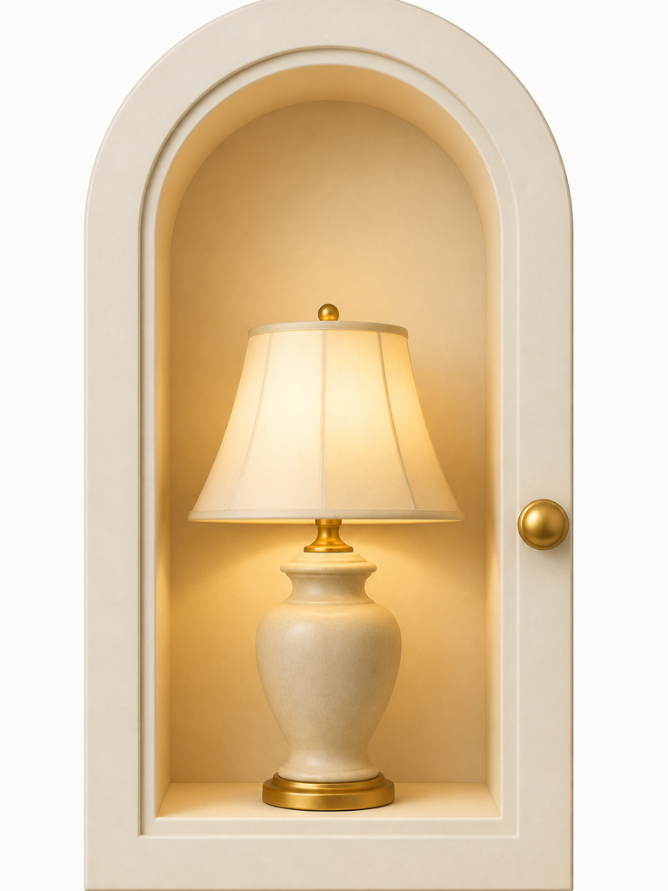
조명의 문몸의 신호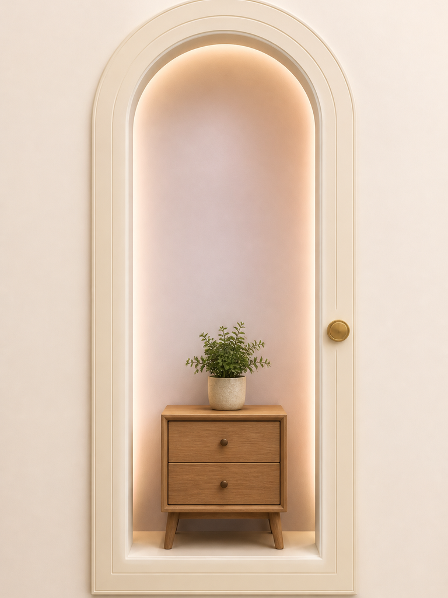
서랍의 문감춰둔 마음안전과 통제권
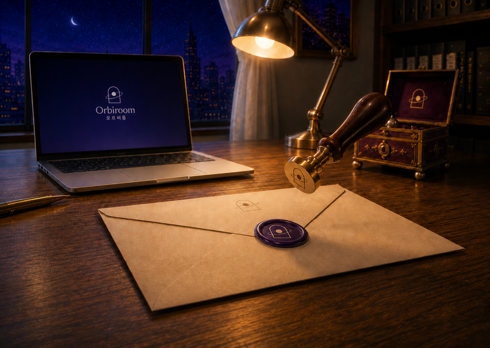
시작
이메일을 남기면 첫 관측 소식을 보내드립니다.
오르비룸은 의료 서비스가 아니며, 진단·치료·예방을 목적으로 하지 않습니다.